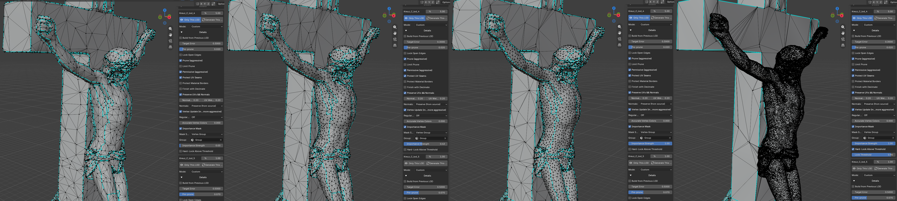
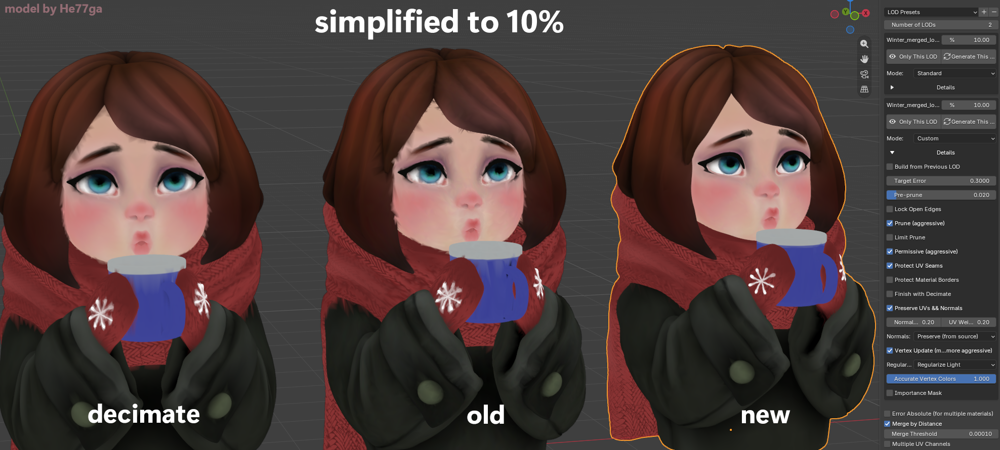

v1.3.9 2026-08-22 currentактуальная
- AddedImportance Strength for the importance mask works far more effectively thanks to a change of algorithm. The old approach worked poorly on most meshes.Importance Strength для маски важности работает значительно эффективнее за счёт смены алгоритма. Старый подход плохо работал на большинстве мешей.

- AddedOptimize for GPU — reorders triangles and vertices the way the GPU reads them. The geometry does not change. It covers the whole family, lod_0 included — meaning a generation changes your object too. Off by default.Optimize for GPU — переупорядочивает треугольники и вершины так, как их читает видеокарта. Геометрия не меняется. Покрывает всё семейство, включая lod_0 — то есть генерация меняет и ваш объект. По умолчанию выключено.
- AddedAccurate Vertex Colors — blends vertex colors along the collapse instead of keeping the surviving vertex's color: a painted gradient no longer comes out in steps. A 0..1 slider in Details, 0 by default; raising it above zero switches on Vertex Update and Regularize.Accurate Vertex Colors — смешивает цвет вершин при схлопывании вместо того, чтобы оставлять цвет уцелевшей вершины: закрашенный градиент больше не выходит ступеньками. Ползунок 0..1 в Details, по умолчанию 0; подъём выше нуля включает обновление вершин и регуляризацию.Pro

- AddedProtect Material Borders — protecting material borders is now separate from the UV seam toggle. There are an order of magnitude more UV seams, so material borders used to cost the price of every seam. Works together with Permissive.Protect Material Borders — защита границ материалов вынесена из общего переключателя со швами UV. UV-швов на порядок больше, так что раньше границы материалов стоили цену всех швов. Работает вместе с Permissive.Pro
- AddedLimit Prune — stops pruning from deleting details wholesale: pre-prune gets a ceiling, and overshooting is compensated by lowering Target Error. Trades hitting the triangle count for keeping the details.Limit Prune — не даёт обрезке удалять детали целиком: предобрезке ставится потолок, а перебор компенсируется снижением Target Error. Обменивает попадание в число треугольников на сохранность деталей.Pro
- AddedMaterials survive with attributes off — every surviving vertex takes the material of the majority of its triangles.Материалы сохраняются и с выключенными атрибутами — каждая уцелевшая вершина забирает материал большинства своих треугольников.Pro
- AddedThe add-on preferences are now laid out in tabs.Настройки аддона теперь удобно разложены по вкладкам.Pro
- FixedAn unwrapped UV map blocked simplification entirely. Blender writes the full 0..1 square onto every face, which comes to 3 UV values for the whole mesh, and nearly every vertex gets locked. Such a map now stays out of simplification and comes back into the LOD unchanged. Real layouts folded onto a single texel are detected separately and left alone. The UV check can be switched off in the preferences.Неразвёрнутая UV-карта блокировала упрощение полностью. Blender пишет на каждую грань полный квадрат 0..1, на весь меш выходит 3 значения UV, и почти каждая вершина запирается. Теперь такая карта не участвует в упрощении и возвращается в LOD без изменений. Настоящие раскладки, сложенные на один тексель, определяются отдельно и не трогаются. Проверку UV можно отключить в настройках.
- FixedCoincident duplicated surfaces would not collapse. A surface duplicated to carry a second material locked itself and everything around it. The extra copy is removed on the buffers, the source mesh is untouched, and the panel gets a warning listing the materials involved. The duplicate check can be switched off in the preferences.Совпадающие дублирующие поверхности не схлопывались. Поверхность, задублированная под второй материал, запирала сама себя и всё вокруг. Лишняя копия убирается на буферах, исходный меш не трогается, в панель идёт предупреждение со списком затронутых материалов. Проверку дублей можно отключить в настройках.
- FixedThe check results are cached so they are not run more often than needed. The cache is dropped on any mesh change, on file load and on undo/redo, and before being used it is checked once more against the triangle count, the corner count and the UV map names.Кэш результатов проверок, чтобы не гонять их лишний раз. Сбрасывается при любом изменении меша, при загрузке файла и на undo/redo, а перед использованием ещё раз сверяется с числом треугольников, числом углов и именами UV-карт.
- FixedA flat-shaded source gave a ragged silhouette. Normals reached the error metric even where they are already noise, and meshoptimizer spent its budget protecting it. On a flat source they no longer enter the metric: many times fewer needle triangles, and shading closer to the source. Smooth-shaded models are unchanged.Плоский источник давал рваный силуэт. Нормали доезжали до метрики ошибки даже там, где они уже шум, и meshoptimizer тратил бюджет на его защиту. Теперь на плоском источнике они в метрику не идут: треугольников-игл кратно меньше, затенение ближе к исходнику. Гладкие модели не изменились.
- FixedAn attribute weight of 0 zeroed the LOD's UV map: the column went in as zeros and was never divided back out. This affected only the Vertex Update path.Вес атрибута 0 обнулял UV-карту LOD: столбец уходил нулями, обратное деление не выполнялось. Затрагивало только путь с Обновлением вершин.
- FixedDead vertices in the finished LOD are now removed. Decimate and the weld left vertices that no face touches — sometimes a noticeable share of the whole LOD. They carried neither UVs nor normals, only weight in the vertex count.Мёртвые вершины в готовом LOD теперь убираются. Decimate и сварка оставляли вершины, которых не касается ни одна грань — иногда их набиралась заметная доля от всего LOD. Они не несли ни UV, ни нормалей, только вес в счётчике вершин.
- FixedPre-prune handed the library a target larger than the buffer.Предобрезка передавала библиотеке цель больше размера буфера.